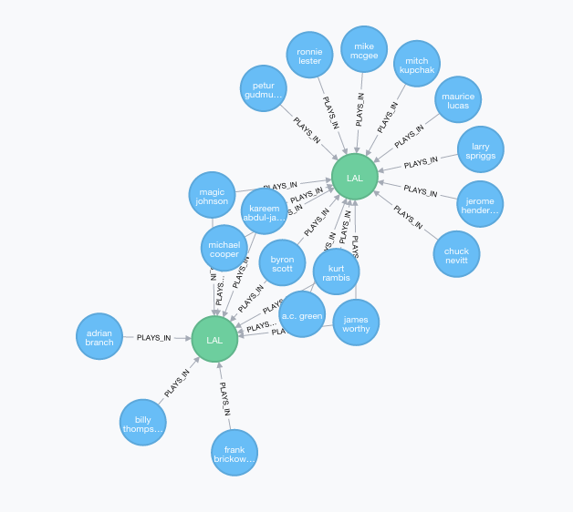

query neo4j
This post is part 2 in a 4 part series. Read the other posts:
Part 1 - Try Neo4j | Part 2 | Part 3 - Collisions | Part 4 - Node Neo4j | Repo | Site

Neo4J is a graph database and it specializes in showing relationships between each data nodes.You can checkout the final product of our one week of work here at six-dribbles. If you click on the about page, you can see some beautiful neo4j-d3 generated moving graphs. In this post I will teach you how to pull some of those images from a neo4j browser, using our (hopefully already installed) dataset!
The 2 commands we ran in part 1 brought all the data in as nodes then mapped relationships between them. Now we will explore the shortest path query, the golden gem of any six degrees of separation project. Throughout the process of this project, I found myself typing in Kobe and Lebron on loop to test the query. The moment the database produced the intended result it was like fireworks.

Right? Kinda DOPE! The next side goals for our website is to bring in the powerful images from neo4j's console directly to our app so people can play with it live. We been busy lately, but here we'll build some queries and move the dots around and build towards the shortest path query.
This is a pretty simple query for demo purposes. Give me the first 25 relationships that come up. It's pretty random and I'm not that into the fact that the lakers are ordered first for some reason, being a BIG laker hater, but here's some more for effect.
MATCH ()-[r:PLAYS_IN]->()
RETURN r
LIMIT 25

This is the same query but for 50 relationships.
MATCH ()-[r:PLAYS_IN]->()
RETURN r
LIMIT 50

This query is for 100 relationships.
MATCH ()-[r:PLAYS_IN]->()
RETURN r
LIMIT 100

So this is only so useful to us. We can find the individual we want with all their connections by using a match where the name is specific. To keep it trailblazer themed, here is every team rasheed wallace played on:
MATCH (p:Player)-[r:PLAYS_IN]->()
WHERE p.name = "rasheed wallace"
RETURN r
We are building towards our Kobe to Lebron query (which was my default test suite command) but there's just a little bit we more that we need, and that's the shortestPath command. shortestPath ((p1)-[*]-(p2)).
MATCH Is the powerful cypher statement that lets us join our information together and get back relationships.
(p1:Player {name:"lebron james" }), is the way we give cypher our starting point, (p2:Player{name:"kobe bryant" }), is the end point, p = shortestPath((p1)-[*]-(p2)) is the key part of the query RETURN EXTRACT(n in nodes(p) | n.name), tells us what to return once the match is made. EXTRACT(n in nodes(p) | n.year), We like to use the name in the first query, RELATIONSHIPS(p) then years in the second, and relationships third.
The information comes back as three arrays with each bit of information in a particular spot, which we can render to the page.
MATCH (p1:Player {name:"lebron james" }),
(p2:Player{name:"kobe bryant" }),
p = shortestPath((p1)-[*]-(p2)) RETURN
EXTRACT(n in nodes(p) | n.name),
EXTRACT(n in nodes(p) | n.year),
RELATIONSHIPS(p)
Yeah! Here's the query in the browser
Sometimes this query picks up someone else in the middle, i.e. trey instead of shaquille, which is one of the interesting questions with a graph database, i.e. when many different correct answers, how do we choose one relationship over the other?
More to come!